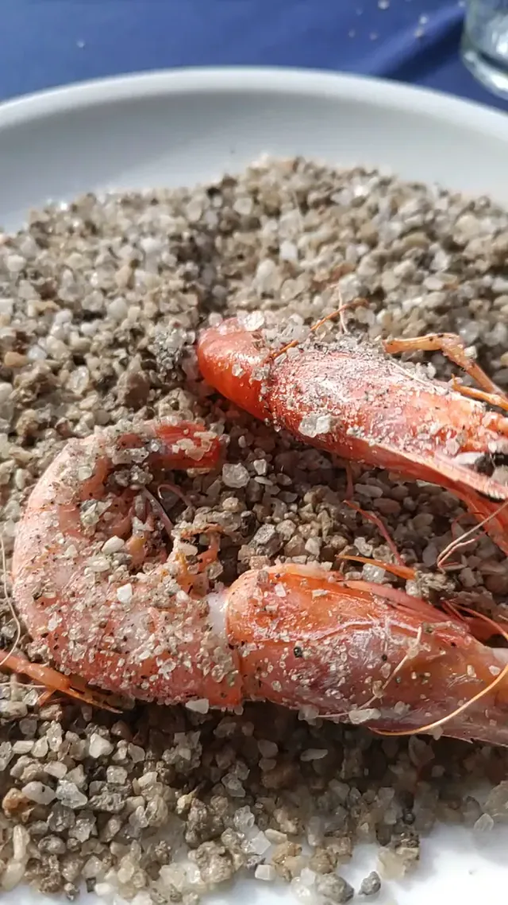
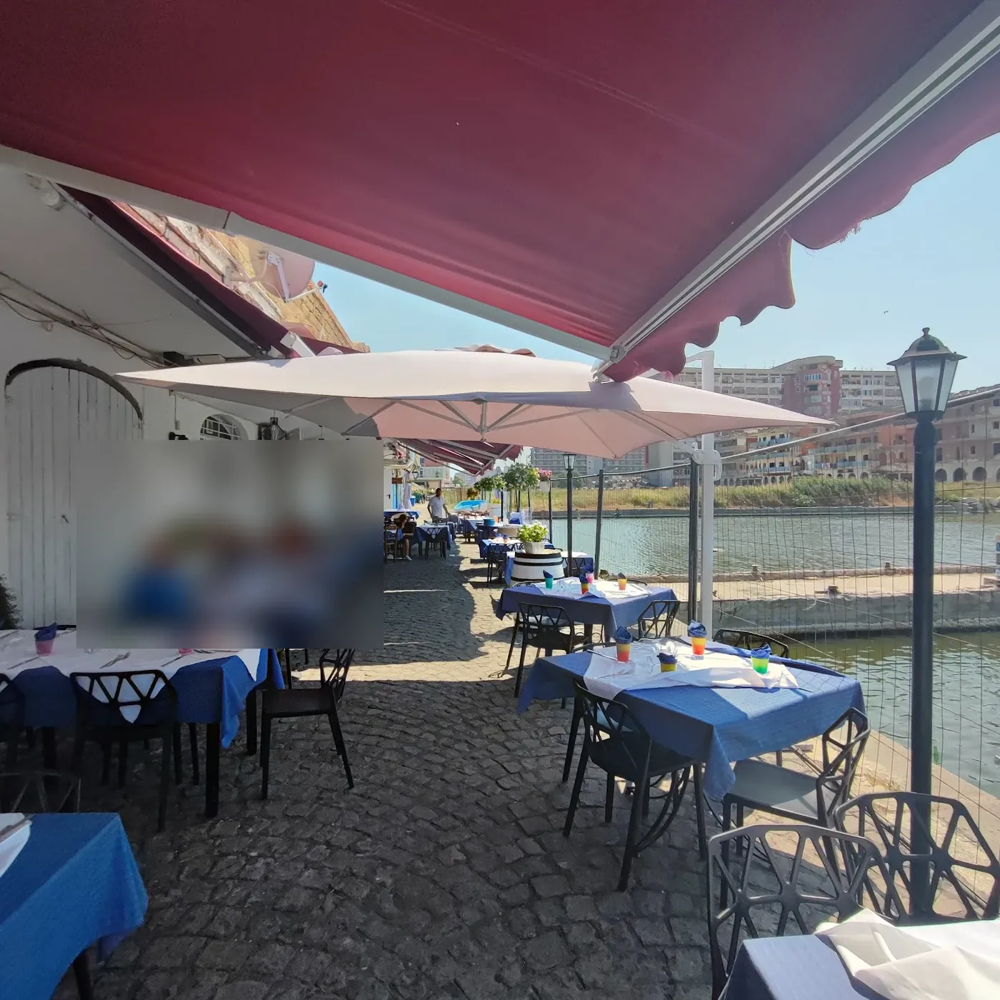

Ristorante a Castel Volturno
LA LANTERNA|DEL PORTO
Ristorante in Via Darsena Orientale, 46 a Castel Volturno. Lo raccontano i clienti nelle recensioni.
Servizi
Cosa facciamo
- 01
Ambiente
«Siamo stati in questo locale e ci siamo trovati benissimo»: dalle recensioni.
- 02
Il servizio
«Sono stata domenica a pranzo in questo fantastico locale!❤️ Personale accohliente e titolari TOP!Ci hanno servito piatti davvero buonissimi.Il piatto che ho»: dalle recensioni.
- 03
Qualità
«Piacevolissima serata in questo locale dove si mangia a base di pesce di altissima qualità»: dalle recensioni.
Dalle recensioni dei clienti.

Il ristorante
Ci trovate a Castel Volturno
Via Darsena Orientale, 46, 81030 Castel Volturno (CE)
Portami al ristoranteLe nostre foto
Dentro La Lanterna del Porto
Foto pubblicate sulla scheda Google dell'attività dal titolare e dai clienti. Toccate una foto per vederla a tutto schermo.
Recensioni Google
4,3 su 5 da 497 clienti
«Siamo stati in questo locale e ci siamo trovati benissimo. Piatti cucinati alla perfezione e materie prime di qualità. Il personale è squisito, gentile e molto professionale. Nota di merito speciale: ci hanno offerto un piatto di linguine con l’astice che era la fine del mondo! Grazie davvero per le coccole e per la splendida giornata. Consigliatissimo!»
«Sono stata domenica a pranzo in questo fantastico locale!❤️ Personale accohliente e titolari TOP!Ci hanno servito piatti davvero buonissimi.Il piatto che ho adorato di piu é stato il primo:una linguina ai crostacei,semplicemente squisita Ci ritorneremo sicuramente ❤️»
«Piacevolissima serata in questo locale dove si mangia a base di pesce di altissima qualità. I tavoli sono all’esterno d’estate e si sta davvero bene. Locale tipico sul mare. I prodotti sono di alta qualità, pesce freschissimo e ben cucinato. Si inizia con antipasto freddo e caldo e se vuoi anche il crudo. Eccezionali i gamberoni sotto sale e le alici marinate con le fragole ( ero scettica prima di assaggiarle, ma una volta assaggiati questi due sapori mi sono dovuta ricredere e devo dire eccezionali) Spaghetti ai frutti di mare eccellenti. Le vongole erano “ super” veraci. Insomma davvero super consigliato. L’unico neo è che avrebbero dovuto provvedere un po’ meglio ad allontanare le zanzare perché la prima parte della serata è stata caratterizzata da una specie di invasione di zanzare. Questo è stato l’unico neo. Per il resto tutto perfetto e buonissimo»
Recensioni riportate senza modifiche, nomi abbreviati.
Orari
Aperti 6 giorni su 7
| Lunedì | Chiuso |
|---|---|
| Martedì | 11:00–17:00 · 17:30–24:00 |
| Mercoledì | 11:00–16:00 · 17:00–24:00 |
| Giovedì | 11:00–16:00 · 18:00–24:00 |
| Venerdì | 11:00–16:00 · 18:00–24:00 |
| Sabato | 11:00–16:00 · 18:00–24:00 |
| Domenica | 11:00–16:00 |
Orari della scheda Google: nei festivi possono cambiare, chiamate per conferma.